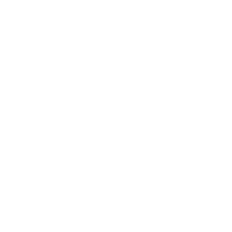
TERMINAL SOVEREIGNДОСТУП ОГРАНИЧЕН
ANALYSE GÉNÉTIQUE
ГЕНЕТИЧЕСКИЙ АНАЛИЗ
ÉCHANTILLON—
STATUT—
HORODATAGE—
—
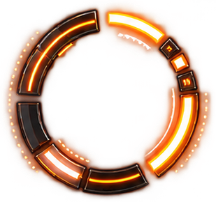
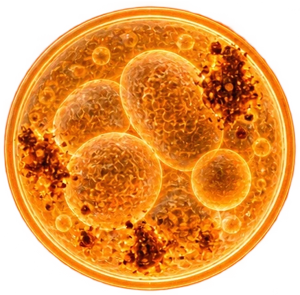
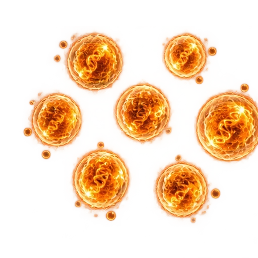
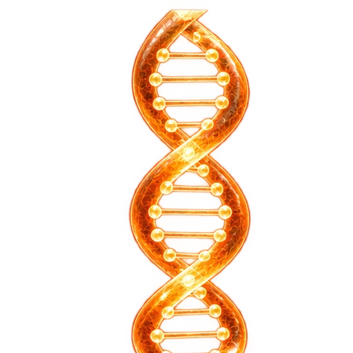
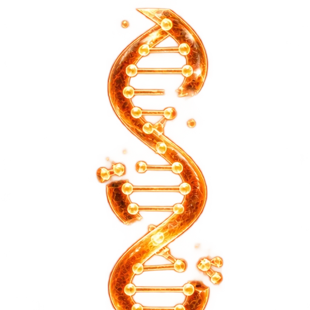
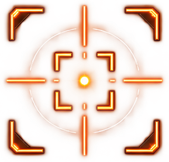
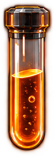
×10
ZOOMУВЕЛИЧЕНИЕ
FOCUSФОКУС
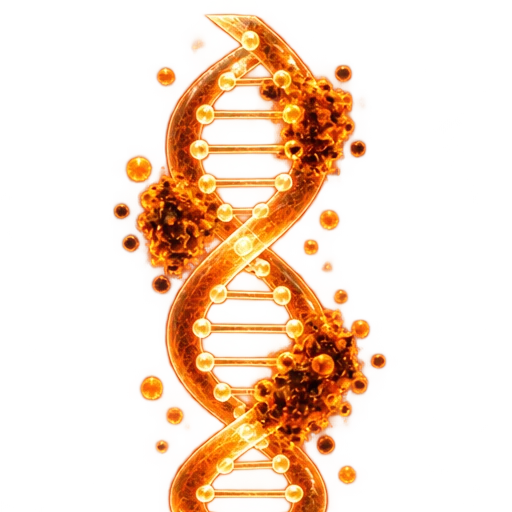
INTÉGRITÉ RESTAURÉEЦЕЛОСТНОСТЬ ВОССТАНОВЛЕНА
0%
—
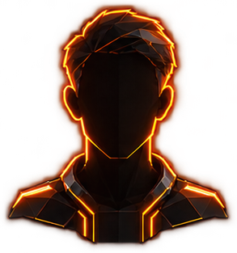
BASE CITOYENNEПОИСК
#————
00,0 %
DOSSIER D'IDENTIFICATIONЛИЧНОЕ ДЕЛО № —
—
—
DÉCÉDÉПОГИБ
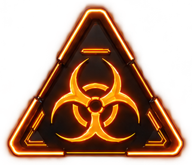
RAPPORT TOXICOLOGIQUEТОКСИКОЛОГИЧЕСКИЙ ОТЧЁТ
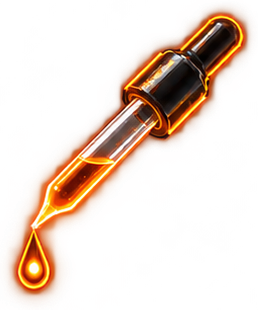
AUTHENTIFICATION BIOMÉTRIQUEБИОМЕТРИЧЕСКАЯ ИДЕНТИФИКАЦИЯ
MAINTENIRУДЕРЖИВАТЬ
ACCÈS AUTORISÉДОСТУП РАЗРЕШЁН